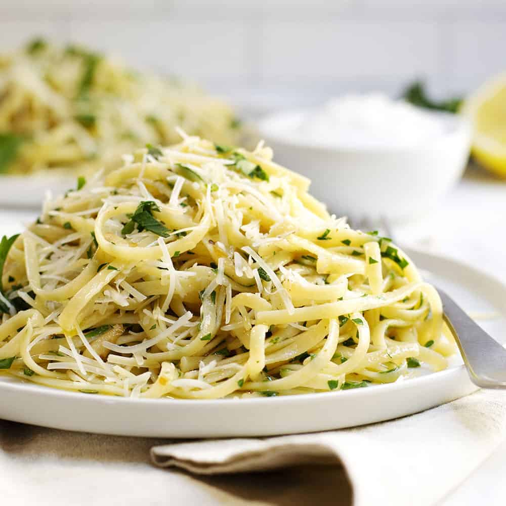

Aglio e Oglio

Description
A simple, lovely pasta dish which brings out the best in its few ingredients.
Ingredients
- Pasta of any shape, squared spaghettoni preferred.
- A good extra virgin olive oil.
- About half a head of garlic.
- Red pepper flakes, Calabrian if possible.
- Parmigiano reggiano - if not possible, other cheeses work.
- Italian parsley.
- Black pepper.
Steps
- Bring water to a rolling boil in a shallow pot or wide saucepan, salting liberally.
- Slice garlic thinly as possible.
- Immerse pasta in boiling water.
- Fry shaved garlic in extra virgin olive oil over medium-low heat until garlic takes on light coloration.
- Crack pepper over the oil, toasting it gently.
- When pasta is several minutes before al dente, remove with tongs to pan with garlic, reserving the residual starchy water.
- Toss pasta in garlic-flavoured oil, using starchy water to create an emulsion.
- When complete, grate parmigiano reggiano and pluck parsley leaves over the dish.
- Serve.